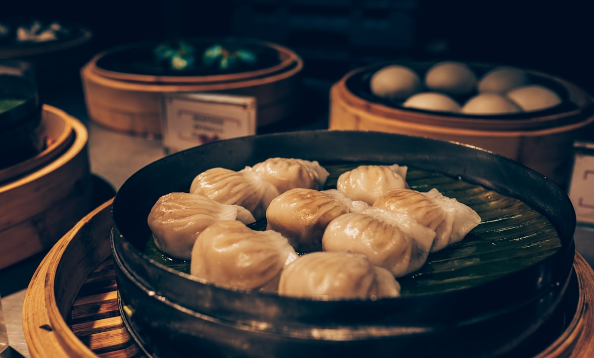
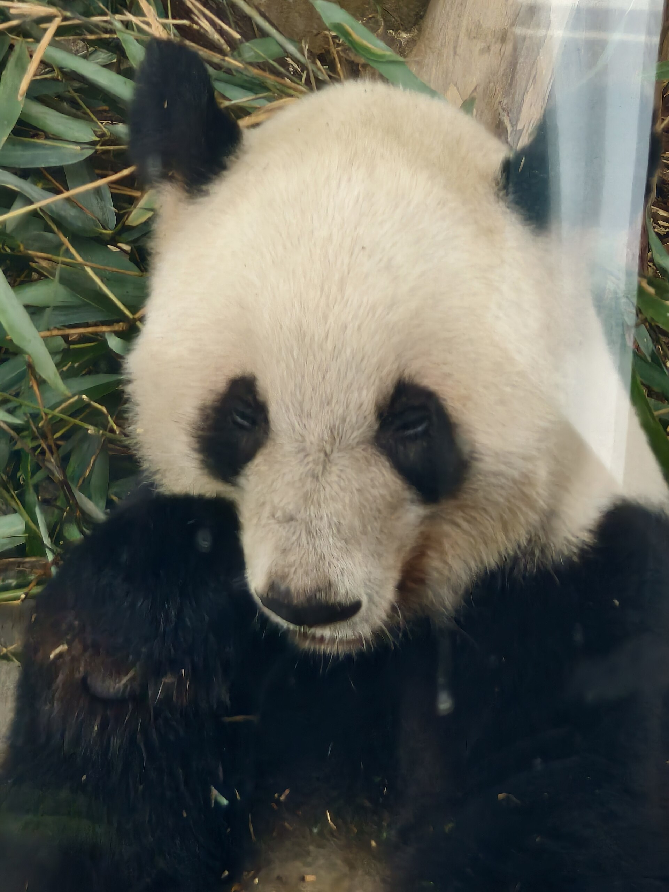
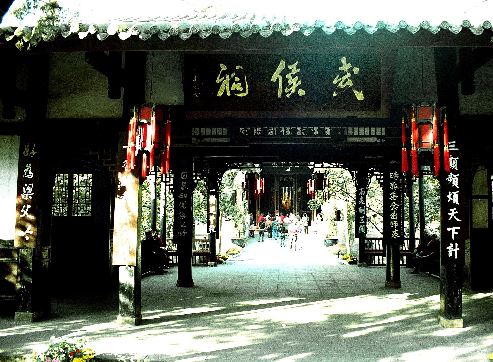
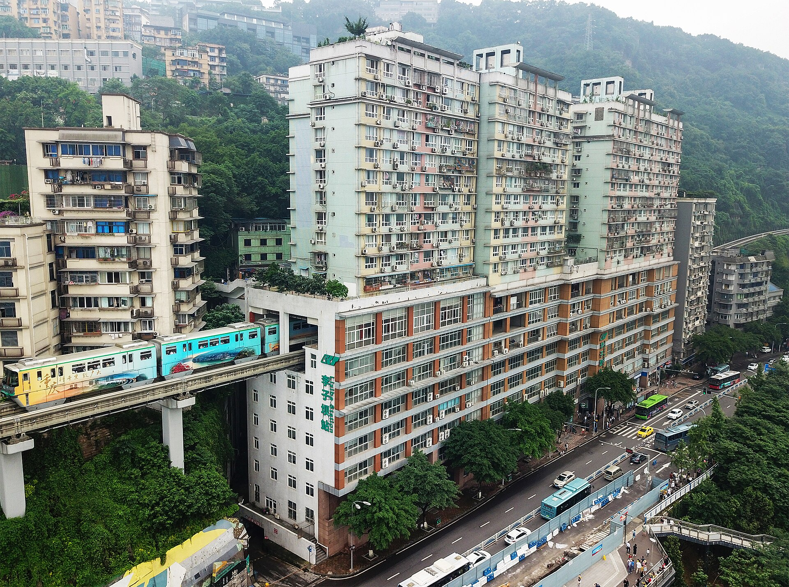
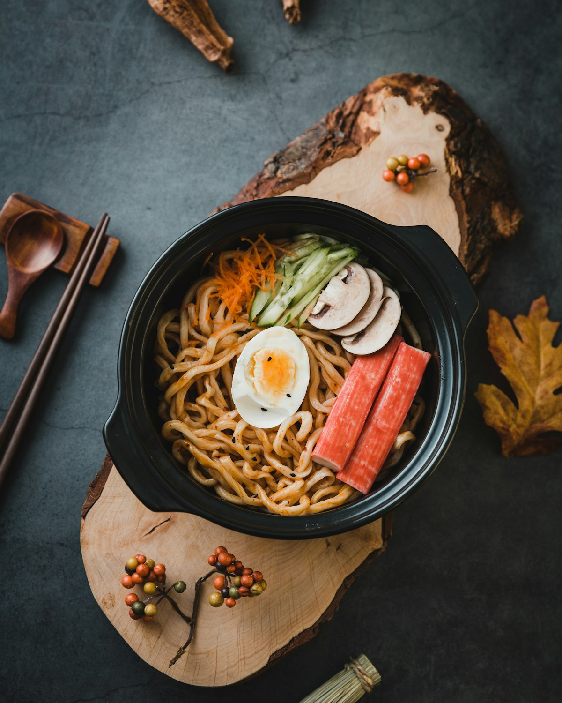

美食
担担面、甜水面、钟水饺、龙抄手、兔头、火锅串串；重庆小面、酸辣粉、毛血旺、江湖菜，每天不重样。

双城 · 5 天 4 晚
美食天花板无疑 · 十一机票与人流最不利 · 建议权衡后决定，或留给普通周末
亮点速览

担担面、甜水面、钟水饺、龙抄手、兔头、火锅串串；重庆小面、酸辣粉、毛血旺、江湖菜，每天不重样。

大熊猫基地赶早餐活跃期；山城步道、长江索道、千厮门大桥看两江夜景。

武侯祠或杜甫草堂二选一，加人民公园老茶馆，感受慢成都。
大交通
淄博无机场，最近济南遥墙（约 100km）。高铁直达成都约 11–12.5 小时且贵，不推荐。济南→成都直飞约 2.5 小时。
行程速览
| 日期 | 上午 | 下午 | 晚上 |
|---|---|---|---|
| D1 10/2 | 淄博→济南机场飞成都 | 人民公园喝茶 | 宽窄巷子+奎星楼街 |
| D2 10/3 | 大熊猫基地（赶早） | 武侯祠/草堂二选一 | 玉林路/建设路 |
| D3 10/4 | 补吃小吃 | 高铁赴渝、解放碑 | 洪崖洞+千厮门大桥 |
| D4 10/5 | 李子坝+鹅岭二厂 | 长江索道+山城步道 | 火锅/江湖菜 |
| D5 10/6 | 重庆小面、伴手礼 | 飞济南回淄博 | — |
每日详细安排
淄博早出发去济南遥墙，飞成都。人民公园鹤鸣茶社盖碗茶（¥20–30）。傍晚宽窄巷子看夜景（1 小时够）。晚饭奎星楼街：冒椒火辣串串 + 冰粉。

居民区面馆一碗重庆小面（豌杂面加煎蛋），买伴手礼（火锅底料、陈麻花）。中午前后赴江北机场飞济南，回淄博。不排景点。
住宿
美食清单


必吃：火锅、串串、担担面、甜水面、钟水饺、龙抄手、兔头、肥肠粉、重庆小面、酸辣粉、毛血旺、江湖菜、冰粉/凉虾。
找店：居民区楼下排队多的店就稳；成都奎星楼街/建设路/玉林路，重庆八一路/较场口/观音桥。
不吃辣：火锅鸳鸯锅+香油蒜泥；小面说「不要辣」；清汤抄手、甜水面、冰粉、蛋烘糕、蹄花汤都是不辣或微辣选项。
十一特别提示
弹性备选